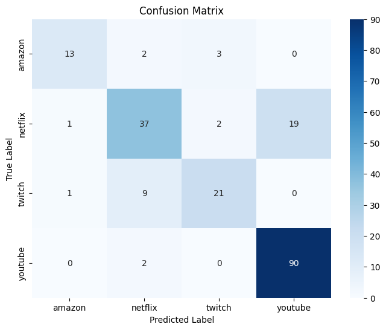
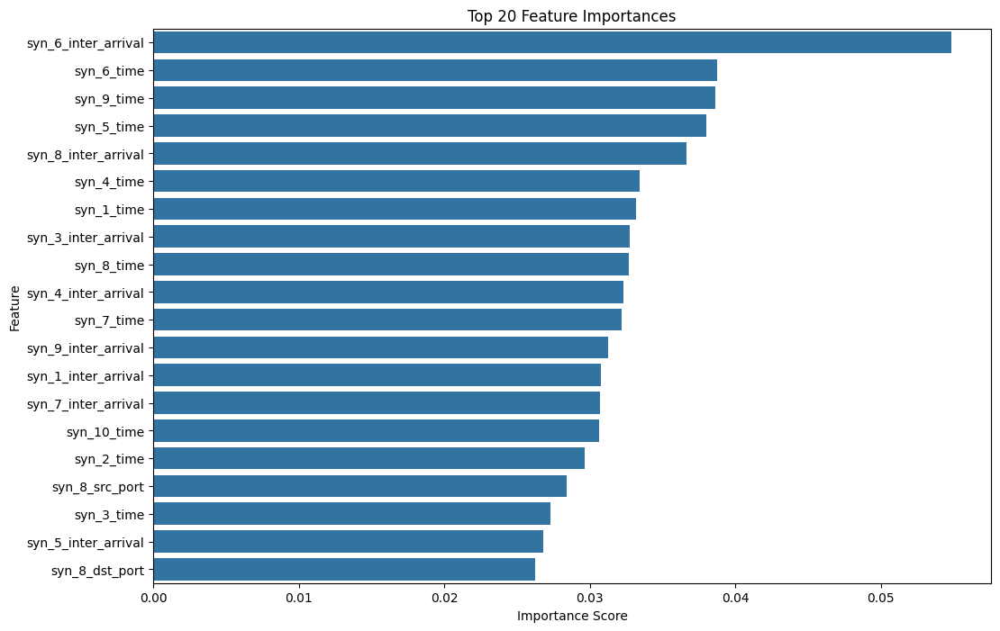
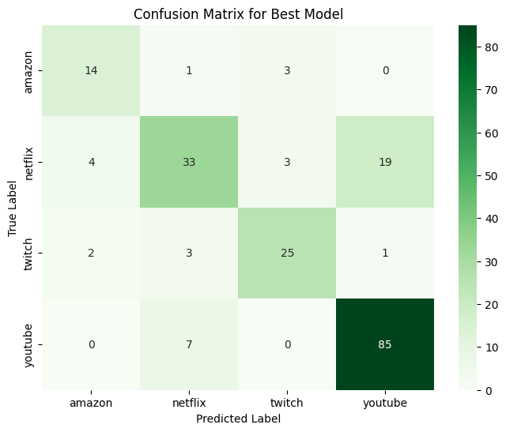

Notebook: Identifying Video Services¶
We will start by importing all the packages we need. We will add more to this section as we go.
[1]:
import os
import pandas as pd
# Import necessary libraries
from tqdm import tqdm
import pandas as pd
import numpy as np
from scapy.all import rdpcap, TCP, IP
from sklearn.preprocessing import StandardScaler
from sklearn.model_selection import train_test_split
from scapy.all import rdpcap, TCP, IP
import numpy as np
import warnings
warnings.filterwarnings("ignore")
pcap_dir = 'output_dir/'
#NUM_FILES should be, at maximum, 20884 because that is the number of data file in output_dir.
#However, this is such a large dataset that it crashes my kernel. Therefore we will set it to a smaller number
#And only use a subset of the data.
#I have only tested up to 1000 because it any larger seems to risk crashing my kernel.
NUM_FILES = 1000
WARNING: Wireshark is installed, but cannot read manuf !
Creating a df with the labels and the location of the features
[2]:
pcap_files = [f for f in os.listdir(pcap_dir) if f.endswith('.pcap')]
sample_ids = []
labels = []
for file in pcap_files:
parts = file.split('_')
sample_id = parts[0]
label = parts[1].replace('.pcap', '')
sample_ids.append(sample_id)
labels.append(label)
data = pd.DataFrame({
'sampleID': sample_ids,
'label': labels,
'filepath': [os.path.join(pcap_dir, f) for f in pcap_files]
})
#Displaying to get a feeling for the output
print(data.head())
sampleID label filepath
0 11128135789608740605 youtube output_dir/11128135789608740605_youtube.pcap
1 1326062620521889375 youtube output_dir/1326062620521889375_youtube.pcap
2 9606350208298304688 amazon output_dir/9606350208298304688_amazon.pcap
3 394452418702735955 netflix output_dir/394452418702735955_netflix.pcap
4 16122494638576240387 netflix output_dir/16122494638576240387_netflix.pcap
Extracting features
[ ]:
def extract_features(pcap_file):
try:
packets = rdpcap(pcap_file)
except Exception as e:
print(f"Error reading {pcap_file}: {e}")
return None
syn_packets = []
for pkt in packets:
if IP in pkt and TCP in pkt:
tcp_layer = pkt[TCP]
if tcp_layer.flags & 0x02:
syn_packets.append(pkt)
if len(syn_packets) == 10:
break
if len(syn_packets) != 10:
print(f"Warning: {pcap_file} contains {len(syn_packets)} SYN packets instead of 10.")
features = {}
for i, pkt in enumerate(syn_packets, 1):
features[f'syn_{i}_pkt_len'] = len(pkt)
features[f'syn_{i}_src_port'] = pkt[TCP].sport
features[f'syn_{i}_dst_port'] = pkt[TCP].dport
features[f'syn_{i}_time'] = pkt.time
#inter-arrival times packets
times = [pkt.time for pkt in syn_packets]
inter_arrival_times = np.diff(times)
for i, inter_time in enumerate(inter_arrival_times, 1):
features[f'syn_{i}_inter_arrival'] = inter_time
return features
Here we are creating the the ultimate dataframe of features and labels which we will use to train our model
[4]:
def process_pcap_files(data, num_files=1000):
data_subset = data.head(num_files).reset_index(drop=True)
feature_list = []
for index, row in tqdm(data_subset.iterrows(), total=data_subset.shape[0], desc="Extracting features"):
pcap_file = row['filepath']
features = extract_features(pcap_file)
if features is not None:
feature_list.append(features)
else:
default_features = {}
for i in range(1, 11):
default_features[f'syn_{i}_pkt_len'] = 0
default_features[f'syn_{i}_src_port'] = 0
default_features[f'syn_{i}_dst_port'] = 0
default_features[f'syn_{i}_time'] = 0.0
for i in range(1, 10):
default_features[f'syn_{i}_inter_arrival'] = 0.0
feature_list.append(default_features)
features_df = pd.DataFrame(feature_list)
data_features = pd.concat([data_subset.reset_index(drop=True), features_df.reset_index(drop=True)], axis=1)
return data_features
data_features = process_pcap_files(data, num_files=NUM_FILES)
print(data_features.head())
Extracting features: 100%|██████████| 1000/1000 [01:26<00:00, 11.59it/s]
sampleID label \
0 11128135789608740605 youtube
1 1326062620521889375 youtube
2 9606350208298304688 amazon
3 394452418702735955 netflix
4 16122494638576240387 netflix
filepath syn_1_pkt_len \
0 output_dir/11128135789608740605_youtube.pcap 78
1 output_dir/1326062620521889375_youtube.pcap 74
2 output_dir/9606350208298304688_amazon.pcap 74
3 output_dir/394452418702735955_netflix.pcap 74
4 output_dir/16122494638576240387_netflix.pcap 66
syn_1_src_port syn_1_dst_port syn_1_time syn_2_pkt_len \
0 55450 443 1516845938.986545 78
1 44216 443 1518267130.401981 74
2 45730 443 1524779210.880480 74
3 38058 443 1514613372.017846 74
4 58495 443 1549055097.181155 66
syn_2_src_port syn_2_dst_port ... syn_10_time \
0 55451 443 ... 1516845942.662726
1 33768 443 ... 1518267131.863319
2 45732 443 ... 1524779212.209382
3 443 38058 ... 1514613372.200013
4 443 58495 ... 1549055097.885408
syn_1_inter_arrival syn_2_inter_arrival syn_3_inter_arrival \
0 0.000528 0.004480 0.015588
1 0.004142 0.011264 0.007913
2 0.000336 0.013468 0.000131
3 0.002520 0.176058 0.000026
4 0.003553 0.008105 0.003490
syn_4_inter_arrival syn_5_inter_arrival syn_6_inter_arrival \
0 0.095991 0.006952 1.871854
1 1.436479 0.000581 0.000731
2 1.314571 0.000101 0.000060
3 0.000018 0.002360 0.000021
4 0.531875 0.019205 0.129595
syn_7_inter_arrival syn_8_inter_arrival syn_9_inter_arrival
0 0.010075 1.665718 0.004995
1 0.000076 0.000082 0.000070
2 0.000060 0.000067 0.000108
3 0.000005 0.001141 0.000018
4 0.000198 0.004217 0.004015
[5 rows x 52 columns]
Creating a mapping of labels to numbers for easier use
[5]:
from sklearn.preprocessing import LabelEncoder
label_encoder = LabelEncoder()
data_features['label_encoded'] = label_encoder.fit_transform(data_features['label'])
label_mapping = dict(zip(label_encoder.classes_, label_encoder.transform(label_encoder.classes_)))
print("Label Encoding Mapping:")
for label, encoded in label_mapping.items():
print(f"{label}: {encoded}")
# Checking mapping
print(data_features[['label', 'label_encoded']].head())
Label Encoding Mapping:
amazon: 0
netflix: 1
twitch: 2
youtube: 3
label label_encoded
0 youtube 3
1 youtube 3
2 amazon 0
3 netflix 1
4 netflix 1
We have to scale our features before training
[6]:
import pandas as pd
from sklearn.preprocessing import StandardScaler
import joblib
exclude_columns = ['sampleID', 'label', 'label_encoded', 'filepath']
feature_columns = [col for col in data_features.columns if col not in exclude_columns]
print("Feature Columns to be Scaled:")
print(feature_columns)
non_numeric_cols = data_features[feature_columns].select_dtypes(exclude=['number']).columns.tolist()
if non_numeric_cols:
print("\nRemoving the following columns")
print(non_numeric_cols)
# Remove non-numeric columns from feature_columns
feature_columns = [col for col in feature_columns if col not in non_numeric_cols]
print("\nColumns scaled:")
print(feature_columns)
scaler = StandardScaler()
data_features[feature_columns] = scaler.fit_transform(data_features[feature_columns])
print("\nScaled Feature Data:")
print(data_features[feature_columns].head())
joblib.dump(scaler, 'scaler.pkl')
print("\nScaler has been saved to 'scaler.pkl'.")
Feature Columns to be Scaled:
['syn_1_pkt_len', 'syn_1_src_port', 'syn_1_dst_port', 'syn_1_time', 'syn_2_pkt_len', 'syn_2_src_port', 'syn_2_dst_port', 'syn_2_time', 'syn_3_pkt_len', 'syn_3_src_port', 'syn_3_dst_port', 'syn_3_time', 'syn_4_pkt_len', 'syn_4_src_port', 'syn_4_dst_port', 'syn_4_time', 'syn_5_pkt_len', 'syn_5_src_port', 'syn_5_dst_port', 'syn_5_time', 'syn_6_pkt_len', 'syn_6_src_port', 'syn_6_dst_port', 'syn_6_time', 'syn_7_pkt_len', 'syn_7_src_port', 'syn_7_dst_port', 'syn_7_time', 'syn_8_pkt_len', 'syn_8_src_port', 'syn_8_dst_port', 'syn_8_time', 'syn_9_pkt_len', 'syn_9_src_port', 'syn_9_dst_port', 'syn_9_time', 'syn_10_pkt_len', 'syn_10_src_port', 'syn_10_dst_port', 'syn_10_time', 'syn_1_inter_arrival', 'syn_2_inter_arrival', 'syn_3_inter_arrival', 'syn_4_inter_arrival', 'syn_5_inter_arrival', 'syn_6_inter_arrival', 'syn_7_inter_arrival', 'syn_8_inter_arrival', 'syn_9_inter_arrival']
Removing the following columns
['syn_1_time', 'syn_2_time', 'syn_3_time', 'syn_4_time', 'syn_5_time', 'syn_6_time', 'syn_7_time', 'syn_8_time', 'syn_9_time', 'syn_10_time', 'syn_1_inter_arrival', 'syn_2_inter_arrival', 'syn_3_inter_arrival', 'syn_4_inter_arrival', 'syn_5_inter_arrival', 'syn_6_inter_arrival', 'syn_7_inter_arrival', 'syn_8_inter_arrival', 'syn_9_inter_arrival']
Columns scaled:
['syn_1_pkt_len', 'syn_1_src_port', 'syn_1_dst_port', 'syn_2_pkt_len', 'syn_2_src_port', 'syn_2_dst_port', 'syn_3_pkt_len', 'syn_3_src_port', 'syn_3_dst_port', 'syn_4_pkt_len', 'syn_4_src_port', 'syn_4_dst_port', 'syn_5_pkt_len', 'syn_5_src_port', 'syn_5_dst_port', 'syn_6_pkt_len', 'syn_6_src_port', 'syn_6_dst_port', 'syn_7_pkt_len', 'syn_7_src_port', 'syn_7_dst_port', 'syn_8_pkt_len', 'syn_8_src_port', 'syn_8_dst_port', 'syn_9_pkt_len', 'syn_9_src_port', 'syn_9_dst_port', 'syn_10_pkt_len', 'syn_10_src_port', 'syn_10_dst_port']
Scaled Feature Data:
syn_1_pkt_len syn_1_src_port syn_1_dst_port syn_2_pkt_len \
0 0.993877 0.346241 -0.154649 1.024289
1 0.077861 -0.896387 -0.154649 0.092270
2 0.077861 -0.728919 -0.154649 0.092270
3 0.077861 -1.577543 -0.154649 0.092270
4 -1.754170 0.683058 -0.154649 -1.771768
syn_2_src_port syn_2_dst_port syn_3_pkt_len syn_3_src_port \
0 0.640709 -0.569927 0.217445 -1.252150
1 -0.271029 -0.569927 0.217445 -1.252150
2 0.232039 -0.569927 0.217445 -1.252150
3 -1.672297 1.116017 0.217445 1.004549
4 -1.672297 2.032025 -1.786657 0.965883
syn_3_dst_port syn_4_pkt_len ... syn_7_dst_port syn_8_pkt_len \
0 1.401767 0.336876 ... -0.567258 0.315394
1 0.960548 0.336876 ... -0.567258 0.315394
2 1.020090 0.336876 ... -0.567258 0.315394
3 -0.758651 0.336876 ... 1.893456 0.315394
4 -0.758651 -1.829527 ... -0.567258 -1.690291
syn_8_src_port syn_8_dst_port syn_9_pkt_len syn_9_src_port \
0 -1.146324 1.204327 1.099736 0.663998
1 1.021946 -0.829594 0.143444 0.717244
2 0.331984 -0.829594 0.143444 -0.041765
3 -1.146324 1.354403 0.143444 0.301197
4 1.091004 -0.829594 -1.769141 -1.668100
syn_9_dst_port syn_10_pkt_len syn_10_src_port syn_10_dst_port
0 -0.565958 0.203498 -1.287480 1.355897
1 -0.565958 0.203498 0.905978 -0.741672
2 -0.565958 0.203498 0.208050 -0.741672
3 -0.565958 0.203498 0.523412 -0.741672
4 1.943879 -1.753213 -1.287480 1.472041
[5 rows x 30 columns]
Scaler has been saved to 'scaler.pkl'.
Splitting the data into training and testing sets
[ ]:
import pandas as pd
from sklearn.model_selection import train_test_split
exclude_columns = ['sampleID', 'label', 'label_encoded', 'filepath']
feature_columns = [col for col in data_features.columns if col not in exclude_columns]
print("Feature Columns to be Used for Training:")
print(feature_columns)
X = data_features[feature_columns]
y = data_features['label_encoded']
TEST_SIZE = 0.2 # 20% for testing
RANDOM_STATE = 42
X_train, X_test, y_train, y_test = train_test_split(
X, y,
test_size=TEST_SIZE,
random_state=RANDOM_STATE,
stratify=y
)
print(f"\nTotal samples: {len(X)}")
print(f"Training samples: {len(X_train)}")
print(f"Testing samples: {len(X_test)}")
def display_class_distribution(y, title):
distribution = y.value_counts(normalize=True) * 100
print(f"\n{title} Class Distribution:")
print(distribution.round(2))
#Relative distributions
display_class_distribution(y, "Original Dataset")
display_class_distribution(y_train, "Training Set")
display_class_distribution(y_test, "Testing Set")
Feature Columns to be Used for Training:
['syn_1_pkt_len', 'syn_1_src_port', 'syn_1_dst_port', 'syn_1_time', 'syn_2_pkt_len', 'syn_2_src_port', 'syn_2_dst_port', 'syn_2_time', 'syn_3_pkt_len', 'syn_3_src_port', 'syn_3_dst_port', 'syn_3_time', 'syn_4_pkt_len', 'syn_4_src_port', 'syn_4_dst_port', 'syn_4_time', 'syn_5_pkt_len', 'syn_5_src_port', 'syn_5_dst_port', 'syn_5_time', 'syn_6_pkt_len', 'syn_6_src_port', 'syn_6_dst_port', 'syn_6_time', 'syn_7_pkt_len', 'syn_7_src_port', 'syn_7_dst_port', 'syn_7_time', 'syn_8_pkt_len', 'syn_8_src_port', 'syn_8_dst_port', 'syn_8_time', 'syn_9_pkt_len', 'syn_9_src_port', 'syn_9_dst_port', 'syn_9_time', 'syn_10_pkt_len', 'syn_10_src_port', 'syn_10_dst_port', 'syn_10_time', 'syn_1_inter_arrival', 'syn_2_inter_arrival', 'syn_3_inter_arrival', 'syn_4_inter_arrival', 'syn_5_inter_arrival', 'syn_6_inter_arrival', 'syn_7_inter_arrival', 'syn_8_inter_arrival', 'syn_9_inter_arrival']
Total samples: 1000
Training samples: 800
Testing samples: 200
Original Dataset Class Distribution:
label_encoded
3 46.2
1 29.6
2 15.3
0 8.9
Name: proportion, dtype: float64
Training Set Class Distribution:
label_encoded
3 46.25
1 29.62
2 15.25
0 8.88
Name: proportion, dtype: float64
Testing Set Class Distribution:
label_encoded
3 46.0
1 29.5
2 15.5
0 9.0
Name: proportion, dtype: float64
Now we will train our random forest classifier. We are chosing random forest because of its versatility and robustness.
[8]:
import pandas as pd
from sklearn.ensemble import RandomForestClassifier
from sklearn.metrics import balanced_accuracy_score, classification_report, confusion_matrix
import matplotlib.pyplot as plt
import seaborn as sns
rf_classifier = RandomForestClassifier(
n_estimators=100,
random_state=42,
class_weight='balanced',
n_jobs=-1
)
rf_classifier.fit(X_train, y_train)
y_pred = rf_classifier.predict(X_test)
balanced_acc = balanced_accuracy_score(y_test, y_pred)
print(f"\nBalanced Accuracy on Test Set: {balanced_acc:.4f}")
class_report = classification_report(y_test, y_pred, target_names=label_encoder.classes_)
print("\nClassification Report:")
print(class_report)
conf_matrix = confusion_matrix(y_test, y_pred)
plt.figure(figsize=(8, 6))
sns.heatmap(conf_matrix, annot=True, fmt='d', cmap='Blues',
xticklabels=label_encoder.classes_,
yticklabels=label_encoder.classes_)
plt.title('Confusion Matrix')
plt.xlabel('Predicted Label')
plt.ylabel('True Label')
plt.show()
# Feature importances
importances = rf_classifier.feature_importances_
feature_names = X_train.columns
feature_importances = pd.Series(importances, index=feature_names).sort_values(ascending=False)
plt.figure(figsize=(12, 8))
sns.barplot(x=feature_importances[:20], y=feature_importances.index[:20])
plt.title('Top 20 Feature Importances')
plt.xlabel('Importance Score')
plt.ylabel('Feature')
plt.show()
Balanced Accuracy on Test Set: 0.7513
Classification Report:
precision recall f1-score support
amazon 0.87 0.72 0.79 18
netflix 0.74 0.63 0.68 59
twitch 0.81 0.68 0.74 31
youtube 0.83 0.98 0.90 92
accuracy 0.81 200
macro avg 0.81 0.75 0.77 200
weighted avg 0.80 0.81 0.80 200


Now we will hypertune our parameters
[ ]:
import pandas as pd
from sklearn.ensemble import RandomForestClassifier
from sklearn.model_selection import RandomizedSearchCV
from sklearn.metrics import balanced_accuracy_score, classification_report, confusion_matrix
import matplotlib.pyplot as plt
import seaborn as sns
import joblib
import numpy as np
from scipy.stats import randint, uniform
from tqdm import tqdm
param_dist = {
'n_estimators': randint(100, 300),
'max_depth': [None, 10, 20],
'min_samples_split': randint(2, 11),
'min_samples_leaf': randint(1, 5),
'bootstrap': [True, False],
'class_weight': ['balanced', None]
}
rf = RandomForestClassifier(random_state=42, n_jobs=-1)
random_search = RandomizedSearchCV(
estimator=rf,
param_distributions=param_dist,
n_iter=50,
cv=5,
scoring='balanced_accuracy',
random_state=42,
n_jobs=-1,
verbose=2,
return_train_score=True
)
random_search.fit(X_train, y_train)
best_params = random_search.best_params_
best_score = random_search.best_score_
print("\nBest Parameters Found:")
for param, value in best_params.items():
print(f"{param}: {value}")
print(f"\nCross-Validation Balanced Accuracy: {best_score:.4f}")
best_rf = random_search.best_estimator_
y_pred_best = best_rf.predict(X_test)
balanced_acc_best = balanced_accuracy_score(y_test, y_pred_best)
print(f"\nBalanced Accuracy with the best model: {balanced_acc_best:.4f}")
class_report_best = classification_report(y_test, y_pred_best, target_names=label_encoder.classes_)
print(class_report_best)
conf_matrix_best = confusion_matrix(y_test, y_pred_best)
plt.figure(figsize=(8, 6))
sns.heatmap(conf_matrix_best, annot=True, fmt='d', cmap='Greens',
xticklabels=label_encoder.classes_,
yticklabels=label_encoder.classes_)
plt.title('Confusion Matrix for Best Model')
plt.xlabel('Predicted Label')
plt.ylabel('True Label')
plt.show()
Fitting 5 folds for each of 50 candidates, totalling 250 fits
Best Parameters Found:
bootstrap: True
class_weight: balanced
max_depth: 10
min_samples_leaf: 4
min_samples_split: 6
n_estimators: 215
Cross-Validation Balanced Accuracy: 0.7303
Balanced Accuracy with the best model: 0.7669
precision recall f1-score support
amazon 0.70 0.78 0.74 18
netflix 0.75 0.56 0.64 59
twitch 0.81 0.81 0.81 31
youtube 0.81 0.92 0.86 92
accuracy 0.79 200
macro avg 0.77 0.77 0.76 200
weighted avg 0.78 0.79 0.78 200

[ ]: